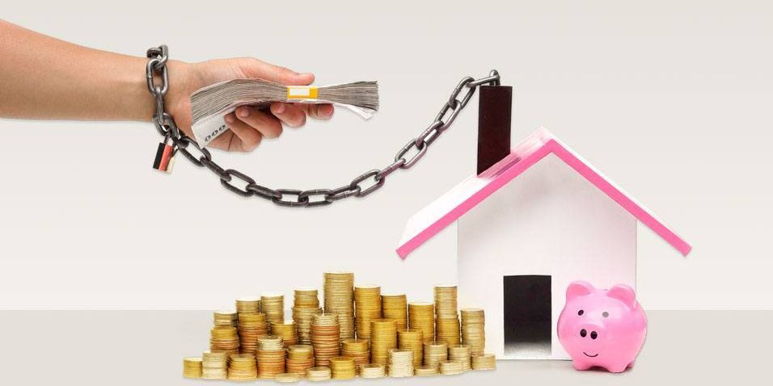

Como quitar suas dívidas

Sair do vermelho exige comprometimento e mudança de postura em relação às suas finanças. Veja dicas que podem ajudar na busca pela organização das contas.
Quer saber mais sobre como sair das dívidas? Então você está no lugar certo. Nesta matéria, você irá entender como sair das dívidas passo a passo e ainda terá as principais dúvidas sobre o assunto responidas. A falta de planejamento financeiro é um dos grandes responsáveis pelo alto índice de inadimplência no país: segundo o Serasa Experian, cerca de 40% dos brasileiros estão convivendo com as contas em atraso nos últimos anos. A dificuldade de controlar o orçamento faz com que as pessoas acessem créditos com altas taxas de juros. Ao se deparar com essa situação, a preocupação é uma só: como sair das dívidas. Sair do mau endividamento, porém, não é algo impossível.
Separamos algumas medidas práticas para te ajudar a reverter essa situação e gerenciar o seu orçamento com sabedoria.
Para facilitar sua jornada nesse universo, confira os principais tópicos desta matéria:- É possível sair das dívidas rapidamente?
- 7 passos para sair das dívidas rápido
- Principais dúvidas sobre quitar dívidas
- Vale a pena fazer emprestimo para pagar dívidas
- Como quitar dividas da empresa
- Como quitar dívidas do cheque especial
- Como quitar usando o FGTS
- Como consultar e regularizar dívida ativa
- Como parcelar dívida ativa
- Principais dúvidas sobre negociar dívidas
- Vale a pena renegociar as dívidas
- Vale a pena fazer o refinanciamento de dívidas
- Dívidas com bancos e instituições financeiras
- Dívidas de cartão de crédito
- Dívidas do FIES
- Dívdas em geral
Afinal, é possível sair das dívidas rapidamente?
Não será exatamente rápido sair das dívidas, mas com um bom planejamento é possível encerrar de uma vez por todas o ciclo de mau endividamento. Para se planejar adequadamente é preciso aprender a equacionar melhor seus gastos partindo do quanto você recebe mensalmente e o quanto possui de dívidas. Com isso em mãos, elabore um planejamento financeiro e trace prioridades de pagamentos. Especialistas indicam a formulação de uma lista ou tabela para inserir todos os compromissos financeiros e ter uma visualização mais ampla de como poderá lidar com seus custos mensais, definindo uma estratégia para a quitação das dívidas antigas. A principal dica sobre como sair das dívidas é acabar com os débitos que possuem juros maiores, como o cheque especial, trocando por dívidas mais baratas. Outra possibilidade é renegociar a dívida diretamente com o credor. Ao visualizar as finanças organizadas, acredite: você vai ter uma noção mais ampla de como quitar dívidas e lidar melhor com seus custos mensais. Se você tem dúvidas sobre como fazer isso, confira nosso passo a passo logo abaixo.
7 passos para sair das dívidas rápido
A famosa planilha com o registro dos seus custos é apenas o primeiro passo para organizar o orçamento. A seguir, veja como se livrar das dívidas em 7 dicas práticas:
Passo 1: Conheça o valor total das suas dívidas Antes de mais nada, é importante listar todos os débitos acumulados até o momento. Com essa prática, é possível identificar quanto se deve no total e o quanto dessa dívida compromete sua renda mensal. O ideal é listar todas as dívidas por ordem de atraso e urgência de pagamento. A prioridade deve ser as contas que possuem a maior taxa de juros, como é o caso do cartão de crédito e cheque especial. Faça uma grande varredura pelas contas antigas e, caso tenha dúvidas sobre o valor da dívida atual, contate as empresas com as quais possui compromissos em atraso para confirmar os dados.
Passo 2: Defina uma meta mensal de economia Depois de definir uma estratégia para quitar dívidas mais urgentes, você poderá adotar uma prática para evitar recorrer a linhas de empréstimo mais caras. Por isso, quando já estiver com as dívidas mais equilibradas, procure definir quais gastos você pode cortar para economizar. Quando economizar se torna um hábito, a possibilidade de retornar ao endividamento se torna muito menor. Por isso, defina quais são os custos que podem ser cortados ou reduzidos do seu orçamento. Essa lista é determinante para definir a melhor estratégia sobre como sair das dívidas.
Passo 3: Negocie com os credores Após conhecer o tamanho da sua dívida e conseguir identificar a sua capacidade de pagamento mensal, é muito mais fácil negociar os débitos mais caros e antigos com as instituições credoras. Antes de fazer esse contato, estabeleça um limite de quanto pode destinar aos débitos. Peça uma proposta de pagamento dessa dívida em condições melhores e verifique no seu orçamento se o valor sugerido pela operadora está em conformidade com o que você definiu.
Passo 4: Troque dívidas caras por mais baratas Se a negociação com as empresas credoras não evoluir, você pode partir para a portabilidade de crédito. Nesse caso, o consumidor pode procurar por alguma instituição que ofereça melhores condições de pagamento e transferir a dívida. Essa prática recebe esse nome porque a instituição nova quita a dívida antiga e cria uma nova com parcelas mais ajustáveis à sua capacidade de pagamento mensal. É possível, inclusive, reduzir a taxa de juros que você está pagando atualmente. Descobrir como se livrar das dívidas passa diretamente por encontrar as melhores oportunidades de juros no mercado. Antes de tomar essa decisão, faça uma ampla pesquisa online sobre quais são as empresas que oferecem empréstimos com juros baixos. Assim, dá para assumir parcelas mais em conta que cabem no seu orçamento.
Passo 5: Passe a controlar os seus gastos Todas essas dicas só funcionam quando o consumidor adota novos hábitos de consumo. Isso não quer dizer que ele deva parar de consumir, mas assumir um compromisso consigo mesmo para quitar dívidas e criar metas financeiras mais rigorosas com o seu dinheiro. Por isso, faça uma auto avaliação sobre seus hábitos de consumo e veja se todos são realmente fundamentais para o seu momento. É muito provável que você encontre alguns gastos que podem ser evitados em períodos de maior dificuldade financeira.
Passo 6: Anote todos os gastos. A melhor forma de controlar o orçamento é anotar todos os gastos. Dessa forma, é possível identificar o seu perfil financeiro de maneira mais clara, bem como entender quais são os pontos focais que estão impactando a sua saúde financeira. Vale usar um caderno ou uma planilha. O importante é conseguir mapear todos os gastos mensais, incluindo os menores. Se você não gosta de fazer anotações, usar aplicativos de educação financeira também pode ajudar a não perder a mão no controle dos débitos.
Passo 7: Busque mais conhecimento sobre educação financeira Uma das principais formas de sair das dívidas é ter o conhecimento necessário para evitá-las. Por essa razão, é fundamental que você busque conhecimento sobre como se educar financeiramente.
Seja por meio de aplicativos, canais no Youtube ou blogs especializados, é importante que você tenha cada vez mais habilidade para organizar seus recursos e a educação financeira será determinante.